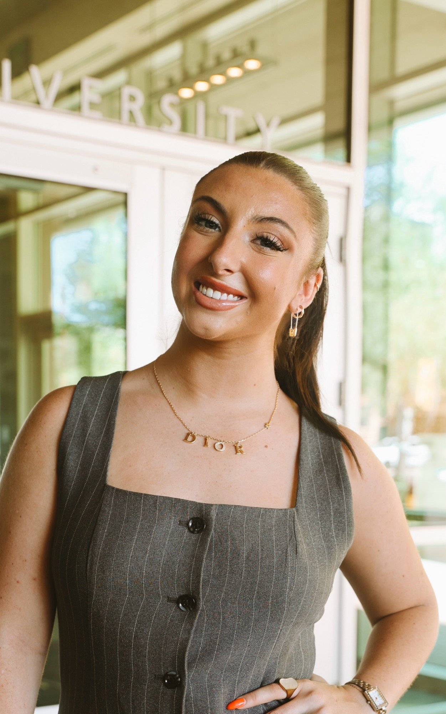

Nebraska Nightly
Executive Producer & Anchor
Anchoring live newscasts and leading Nebraska's largest coverage of the 2026 midterms.
Student journalist
Anchor, columnist, executive producer and political reporter from Nebraska.

Executive Producer & Anchor
Anchoring live newscasts and leading Nebraska's largest coverage of the 2026 midterms.
Senior Opinion Editor & Columnist
Weekly columns that have reached 20,000+ readers.
Podcast Host
A weekly political news podcast on YouTube and Spotify.